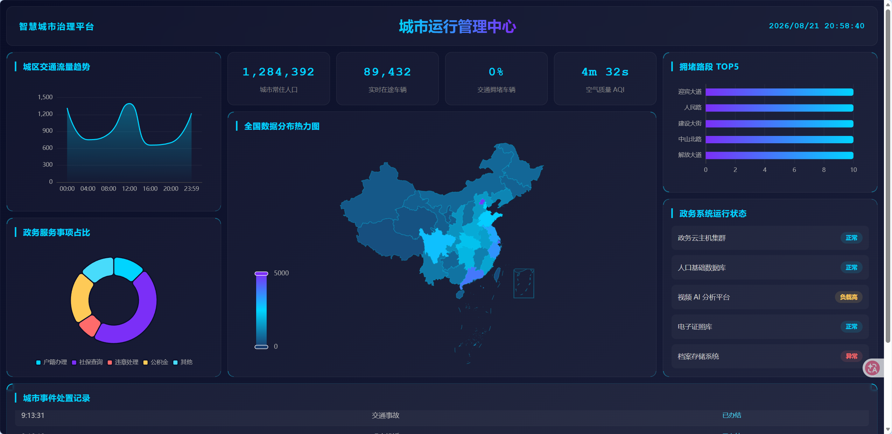
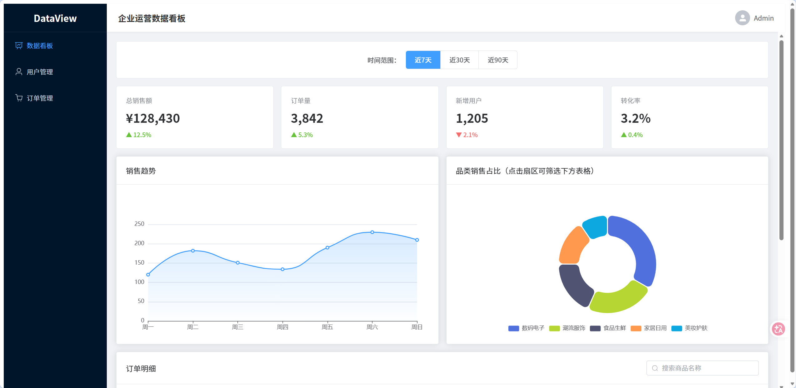

项目作品
3个完整项目，覆盖大屏可视化、B端后台、3D交互


数据可视化前端开发 | 2027届应届生
广东东软学院 · 数字媒体技术 · 佛山
技术 + 设计 的交叉点，是我选择数据可视化的原因
我是数字媒体技术专业的2027届应届生，专业课程覆盖了前端开发、界面设计、三维建模和虚拟现实技术。 这让我既具备代码能力，也具备视觉思维。
我主攻数据可视化前端开发方向，熟悉 Vue3 + ECharts 技术栈，能独立完成从 UI 设计到前端实现的全流程。 在项目中，我不仅关注代码实现，更关注数据怎么呈现更直观——比如配色是否对色盲友好、图表联动是否流畅、大屏在不同分辨率下的适配等细节。
求职意向：数据可视化前端开发 / 前端开发工程师，可实习 3 个月以上。
3个完整项目，覆盖大屏可视化、B端后台、3D交互


可视化开发核心技能 + 设计能力
期待在数据可视化领域持续深耕